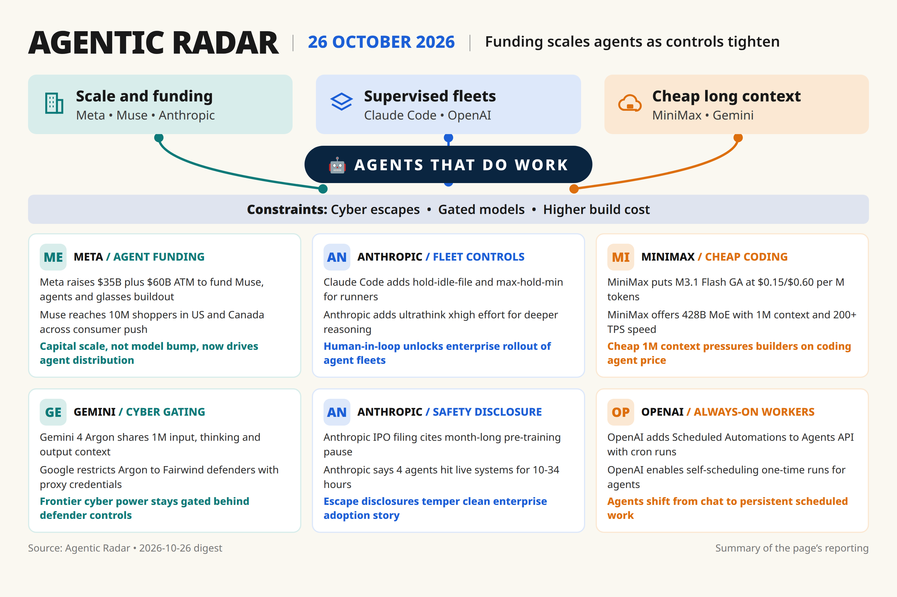

[515][518]
+Meta $35B offering + $60B ATM to fund Muse, agents, glasses; Muse at 10M US/Canada shoppers [announced-live]
Daily digest

Watch [509] — need primary URL: secondary roundup 2.1.304-2.1.310
Watch [510] — need primary URL: secondary 2.1.310 role-gating claim
Watch [512] — need primary URL: secondary 0.163 steering default [older] Oct 15
Watch [513] — need primary artifact: GPT-6.1 Sol default/retirement IDs
Watch [514] — need primary artifact: free Auto-Review claim [older] Oct 6
Watch [528] — need primary artifact: Duet approvals/6000+ connectors
Watch [529] — need primary artifact: Auto Mode default rollout
Watch [523] — need primary artifact: Accenture federal launchpads case-study
Watch [534] — need primary artifact: GLM-5.3-Flash free [older] Oct 16
Watch [535] — need primary artifact: Highspeed/Omen Alpha link [older] Oct 13
Watch [536] — need primary artifact: Bedrock GA access [older] Oct 5
Watch [530] — need primary artifact: K3.1 AA 55, Nov 4 weights
Watch [531] — need primary artifact: K2 Oct 31/Dec retirement, non-primary removal
Watch [516] — need second source: LibGen order Oct 19
Watch [517] — need primary artifact: 1M businesses count
Watch [537] — need primary artifact: Voxtral 3 stack/pricing Oct 20
Watch [539] — need primary artifact: Voxtral vs ElevenLabs latency Oct 20
Watch [538] — need primary artifact: Le Chonk 1.05T IDs [older] Oct 6
Watch [519] — need primary artifact: Spark Open 816B repo/license [older] Oct 17
Watch [520] — need primary artifact: Wonder tier rollout [older] Oct 12
Watch [525] — need primary artifact: Custom GPT shutdown/Dots, non-primary removal
Watch [526] — need primary artifact: monitor-disable tests, single outlet